<link href="https://fonts.googleapis.com/icon?family=Material+Icons" rel="stylesheet">
<mat-sidenav-container class="sidenav-container">

  <mat-sidenav #drawer class="sidenav" fixedInViewport
      [attr.role]="(isHandset$ | async) ? 'dialog' : 'navigation'"
      [mode]="(isHandset$ | async) ? 'over' : 'side'"
      [opened]="(isHandset$ | async) === false">
    <mat-toolbar class="mat-toolbar-custom">
      <div>
        <span class="name-logo">ATLAS</span>
<!--        <span></span>-->
      </div>
    </mat-toolbar>
    <mat-nav-list >
      <a  class="some-custom" mat-list-item routerLink="/home"  routerLinkActive="is-active">
          <span></span>
          <span class="name-menu">Επισκόπηση</span>
      </a>
      <a class="some-custom" mat-list-item routerLink="/notification" routerLinkActive="is-active">
          <span></span>
          <span class="name-menu">Ειδοποιήσεις</span>
      </a>
      <a class="some-custom" mat-list-item routerLink="/chart" routerLinkActive="is-active">
        <span></span>
        <span class="name-menu">Ανάλυση</span>
      </a>
      <a class="some-custom" mat-list-item routerLink="/predictions" routerLinkActive="is-active">
        <span></span>
        <span class="name-menu">Προβλέψεις</span>
      </a>
      <a class="some-custom" mat-list-item routerLink="/rating" routerLinkActive="is-active">
        <span></span>
        <span class="name-menu">Αξιολόγηση</span>
      </a>
      <a class="some-custom" mat-list-item routerLink="/profile" routerLinkActive="is-active">
        <span></span>
        <span class="name-menu">Προφίλ</span>
      </a>
      <a (click)="onLogout()" class="some-custom" mat-list-item href="/logout" routerLinkActive="is-active">
        <span></span>
        <span class="name-menu">Έξοδος</span>
      </a>
    </mat-nav-list>
  </mat-sidenav>

  <mat-sidenav-content>
    <mat-toolbar color="primary">
      <button
        type="button"
        aria-label="Toggle sidenav"
        mat-icon-button
        (click)="drawer.toggle()"
        *ngIf="isHandset$ | async">
        <mat-icon aria-label="Side nav toggle icon">menu</mat-icon>
      </button>
<!--      <span>Smart Garden</span>-->
    </mat-toolbar>
    <!-- Add Content Here -->
    <ng-content></ng-content>
  </mat-sidenav-content>
</mat-sidenav-container>
